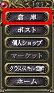
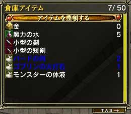
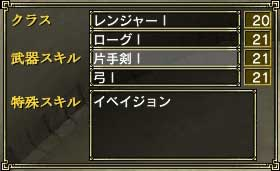
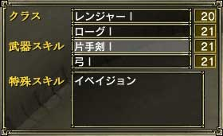

倉庫には標準で50種類のアイテムを預けることができます。ここに保管しておけば、運営側のサーバーがクラッシュしてデータが破損しない限りアイテムは無くなりません。また倉庫に預けたアイテムは、個人ショップに出品することもできます。
倉庫の容量は、町にいる「倉庫職人」に依頼することで増やすことができます。当然、かなりの額のお金が必要となりますが、増やしたい人は増やしてみるといいでしょう。
倉庫を利用例として、装備品が壊れたときに備え予備を保管したり、錬成用のアイテムを貯めておいたり、無駄遣いしないようお金を預ける・・・といったことが挙げられます。
倉庫を利用するには、メニュー3ページ目の「倉庫」を選んでください。Tabキーで「倉庫」もしくは、「かばん」のウィンドウにフォーカスを移動させ、エンターキーでアイテムを移動できます。
倉庫のアイテムの中で、青文字で表示されているのが個人ショップに出品中のアイテムです。
 
(左：メニュー 右：倉庫のウィンドウ) |
 
